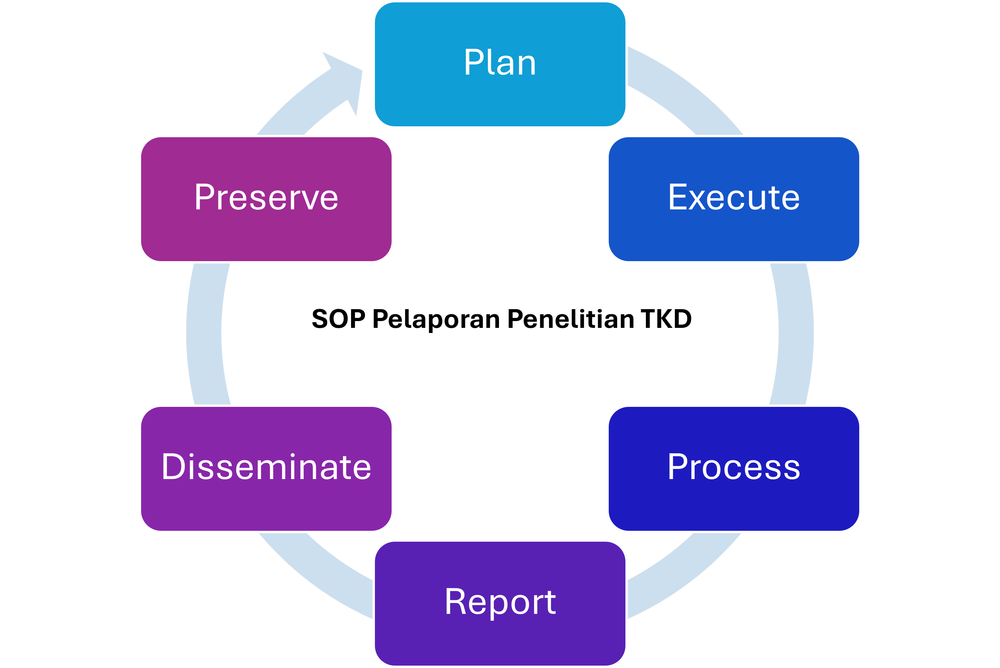

SOP Pelaporan Kegiatan Riset
Digital Ship Technology Laboratory – Departemen Teknik Perkapalan, ITS
Tujuan & Ruang Lingkup
Menjamin seluruh kegiatan riset terdokumentasi konsisten, mudah ditelusuri, dan siap untuk evaluasi, publikasi, serta preservasi sesuai pendekatan Research Lifecycle Management (RLM).
Berlaku untuk mahasiswa, asisten riset, dosen, dan seluruh anggota lab yang terlibat dalam riset.
Ringkasan RLM (Research Lifecycle)
- Plan – tujuan, metodologi, jadwal & target luaran.
- Execute – eksperimen/pengumpulan data & logbook.
- Process – pembersihan, validasi & analisis data.
- Report – penyusunan laporan sesuai SOP lab.
- Disseminate – publikasi/website/jurnal/konferensi.
- Preserve – arsip digital & keterhubungan profil penulis (LinkedIn) untuk keberlanjutan.

Prosedur Pelaporan per Fase
Plan
- Isi Google Form (judul/topik, metodologi singkat, rencana jadwal, target luaran).
- Unggah dokumen rencana ke folder bersama /Riset/<Tahun>/<Nama>/Plan/.
Execute
- Laporkan perkembangan minimal mingguan lewat Form (ringkas & bukti kegiatan bila ada).
- Simpan data mentah di /Riset/<Tahun>/<Nama>/DataRaw/.
Process
- Unggah berkas pembersihan/validasi/analisis ke /Processed/.
- Catat alat/skrip yang digunakan (link repo bila ada).
Report
- Tulis laporan sesuai template lab (Word/LaTeX) dan unggah ke /Reports/.
- Kirim ringkasan bulanan ke pembimbing.
Disseminate
- Catat status kirim/diterima (accepted) dan link publikasi/DOI.
- Perbarui luaran di website lab.
Preserve
- Arsipkan data akhir, skrip, laporan, dan tautan publikasi ke Form.
- Tambahkan tautan profil penulis (LinkedIn/Scholar) untuk keberlanjutan.
Penamaan Berkas & Struktur Folder
Pola nama file: YYYY-MM-DD_Tahap_NamaPeneliti_Versi.ext
Contoh: 2025-08-11_Process_AdiNovitarini_v1.xlsx
- /Riset/2025/Nama/Plan/
- /Riset/2025/Nama/DataRaw/
- /Riset/2025/Nama/Processed/
- /Riset/2025/Nama/Reports/
- /Riset/2025/Nama/Publish/
- /Riset/2025/Nama/Archive/
Peran & Tanggung Jawab
- Koordinator Riset Lab – memantau kepatuhan & rekap bulanan.
- Dosen Pembimbing – validasi isi & memberikan persetujuan laporan.
- Mahasiswa/Peneliti – mengisi Form sesuai fase & jadwal.
Frekuensi Pelaporan
- Mingguan – update progres via Google Form (fase Execute/Process).
- Bulanan – ringkasan progres ke pembimbing (fase Report).
- Akhir – pelaporan final + preserve (fase Disseminate/Preserve).
Semua isian Form akan tampil otomatis pada halaman Tracker (publication.html) setelah tersimpan di Google Sheets.